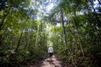

Boletim de Notícias
Pesquisadores desvendam por que os girassóis param de seguir o sol
O estudo esclarece a mudança na rotina dos girassóis a partir da vida adulta. De acordo com a revista científica "Science", a resposta está nos ritmos circadianos, o relógio interno dos girassóis.
Revitalização do São Francisco deve mobilizar toda a sociedade, defende ministro

Sarney Filho afirmou ser fundamental a colaboração dos três poderes e da sociedade civil para que o programa de recuperação do rio tenha êxito.
Senado aprova participação do Brasil em acordo climático mundial em Paris
Brasil é um dos primeiros países a confirmar a participação no Acordo de Paris.
Julho foi o mês mais quente já registrado, segundo dados da Nasa
Dados divulgados pela Nasa apontam aumento recorde de temperatura. Este é o décimo mês mais quente registrado em sequência.